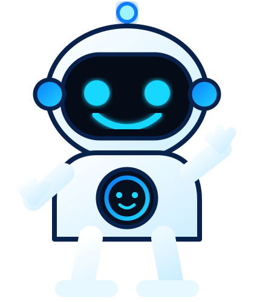

Kiber
Kibernetic BNB Intelligence
Scanner intelligente della BNB Chain
Kiber legge token, trend, rischi, flussi e notizie e li riunisce in una sola dashboard.
Cos'è: il centro analisi BNB di Kiber.
Serve a: trovare ciò che cambia prima e capire i rischi.
Kiber: gestisce lo scanner e ti spiega i dati.
KIBER • SCANNER ATTIVO

BNB Overview
I numeri essenziali, senza rumore.
Prezzo BNB
~771 $
+8,7% • 30D
Market Cap
~102,7B $
Dimensione di mercato
Volume 24h
~650M $
Attività recente
Supply circolante
~133,16M
BNB in circolazione
Scanner Token
È il cuore di Kibernetic: cerca, confronta e classifica token BNB Chain.
| Token | Settore | Trend 7G | Resource | Speculation | Risk | Rischio |
|---|---|---|---|---|---|---|
| BNB | Layer 1 | +5,4% | 91 | 64 | 35 | Basso |
| CAKE | DeFi | +12,8% | 79 | 77 | 52 | Medio |
| TUT | AI / Tool | +48,1% | 62 | 88 | 78 | Alto |
| SXP | Infrastructure | +7,3% | 74 | 61 | 54 | Medio |
| CGPT | AI | +12,4% | 82 | 78 | 67 | Medio |
| KITE | AI Agents | +8,7% | 76 | 88 | 69 | Alto |
Rischi & livelli chiave
Supporti BNB720 $ / 680 $
Area attuale770–785 $
Resistenza800–805 $
Rischi principaliMacro USA • volatilità • calo attività on-chain
Kibernetic Score
Tre numeri per separare qualità, speculazione e rischio.
Resource Score
91/100Utilità, liquidità, fondamentaliSpeculation Score
64/100Momentum, volume, volatilitàRisk Score
35/100Supply, contratto, drawdownSalute della chain
Quanto è attiva e liquida la rete.
TVL DeFi
~5,85B $Stablecoin
~13,31B $Indirizzi attivi 24h
~2,04MTransazioni 24h
~17,3MNews & Impatto
Non solo crypto: anche macro, politica, regolamentazione e geopolitica.
BNB Chain annuncia nuovi strumenti per gli sviluppatoriPossibile impatto su attività, progetti e domanda di rete.
IMPATTO CHAIN
Inflazione USA: dati migliori delle atteseIl quadro macro può influenzare liquidità e propensione al rischio sulle crypto.
IMPATTO MACRO
UE verso nuove regole per exchange e DeFiRegolamentazione da seguire per accesso, compliance e flussi di capitale.
IMPATTO NORMATIVO
Crescente interesse istituzionale su BNB ChainDa verificare attraverso flussi, liquidità e attività on-chain.
IMPATTO CAPITALE
Settori seguiti
Dove Kiber cerca rotazione.
AI & AgentsAutomazione, agenti, AI services
ForteData & IntelligenceAnalytics e dati on-chain
CrescitaDePIN & ComputeGPU, nodi, infrastruttura
SelettivoCyber & IdentitySicurezza e identità digitale
StrutturaleParla con Kiber
Kiber gestisce lo scanner e ti aiuta a capire dati, rischi e opportunità.
Sono Kiber. Chiedimi del token scanner, dei rischi, del BNB Overview o delle news. In questa V3 la chat è una demo locale; il collegamento AI live sarà il passo successivo.
Kibernetic PRO
Scanner avanzato, filtri completi, alert in tempo reale, token emergenti, news e analisi Kiber.
€3,50/ mese